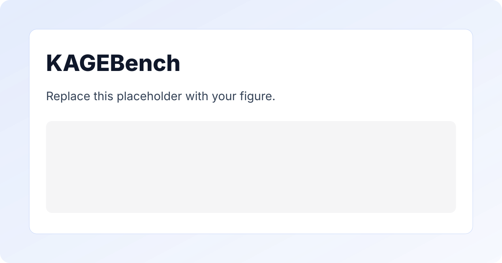

KAGEBench
Abstract
FULL_ABSTRACT_TEXT_HERE.

Result description 1.
Result description 2.
Result description 3.
Result description 4.
Video Presentation
Poster
BibTeX
@article{YourPaperKey2024,
title={Your Paper Title Here},
author={First Author and Second Author and Third Author},
journal={Conference/Journal Name},
year={2024},
url={https://avanturist322.github.io/KAGEBench/}
}